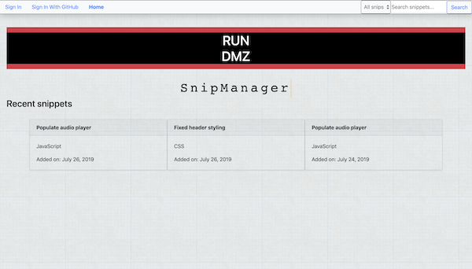

Hi, I'm Zeke Hart. I'm a full-stack developer based in Durham, NC.
About Me
I'm a detail oriented full-stack developer who loves every part of the development process. I'm comfortable making anything from designing a website and building it in HTML and CSS, to building headless backend applications in Node or Python. I had been building webpages using Wordpress, Drupal, and Plone for several years but wanted to get a more in depth understanding of what was going on beneath the surface and enrolled in a three month intensive software engineering bootcamp. Getting a deeper understanding of coding has also let me pursue some of my passions, namely data analysis and natural language processing.
Some projects I've done
AHAbot
I worked with three of my fellow classmates at Momentum Learning over the course of a few weeks to build this slackbot that communicates with Home Assistant for the Raspberry Pi. It allows you to check on and change the status of your smart devices from anywhere. The bot is built in Node.js using Node Slack SDK, Natural.js, and axios. The registration site is built in Django.
Snippet Manager
A website that lets users store, share, and edit code snippets. Built in Django using Django rest framework and lots of and lots of javascript. Code highlighting is done with prism.js on most pages and code mirror when entering new snippets. Two classmates and I built it over the course of a week.

iTunes API Search
A website that lets you search the iTunes API and will display song, album, and artist information. You can play any of the previews that iTunes provides as well. Built with vanilla JS, HTML, and CSS.
Skills and Experience
Skills
- Programming Languages: Python, JavaScript, HTML, CSS, Bash
- Notable Frameworks and Environments: Django, Node, Vue
Experience
I'm a detail oriented full-stack developer who loves every part of the development process. I'm comfortable making anything from designing a website and building it in HTML and CSS, to building headless backend applications in Node or Python. I had been building webpages using Wordpress, Drupal, and Plone for several years but wanted to get a more in depth understanding of what was going on beneath the surface and enrolled in a three month intensive software engineering bootcamp. Getting a deeper understanding of coding has also let me pursue some of my passions, namely data analysis and natural language processing.